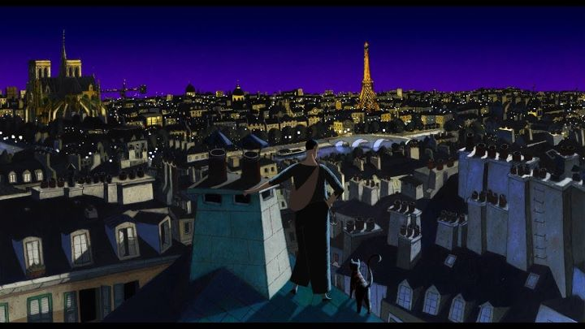

"A Cat in Paris" is a French-animated film that shared an academy award nominee with "Chico and Rita" for best animated feature in 2011. Sadly, both lost to American feature "Rango" that year, which was also a good film, but not up to the cultural caliber and creativity of these two films. While that might have limited anyone from discovering this film, it shouldn't stop you from watching this little gem. The film is about two people: a cat burglar who spends his nights stealing jewelry and artifacts, and a young girl whose mother works at the head of the local police force. The girl's father was killed by a mobster name Victor Costa, and the mother has vowed to capture him, at the expense of spending time with the young girl, who hasn't spoken a word since her father's death. The girl and the thief share one thing in common: a stray cat who comes back a forth between the two. When the girl wanders out a gets caught by Victor Costa, the thief (and yes, the cat), must rescue her, and the mother learns some lessons about what is important to her. The film is advertised as a comedy, and in many ways, it succeeds there. The thief Nico is a charming man who sneaks around officers effortlessly. The guards and criminals themselves are subject to slapstick humor, and Victor Costa himself is a strange fellow indeed. Not everything is rosy humor though. This is a serious caper just as much a comedy, and some scenes can get very serious indeed. The mother herself has some inner demons with the loss of her husband, and how Victor ends up is a little dark for a seemingly innocent children's film. Whatever the case, the writing of the film is solid and entertaining, if a little unremarkable. At only a little over an hour long, the story probably isn't expected to be that spectacular anyway, but if that isn't on your mind, you'll be plenty satisfied. The visuals are a real eye-catcher. Using a European style you might have seen on old French posters, the art looks surreal, and colors and shading are both used to create a uniform state. The animation, while somewhat limited, matches the style, and little touches like how Nico sneaks around are quite nice. Props to the animations studio Folimage for doing everything by hand, as I didn't see a bit of computer-animated 3d anywhere here, a rarity in modern films. The music fits perfectly, and both the English and original French dub is included in the home release. I don't know why Steve Blum, the English voice of Nico, didn't get his name on the box: he's a legend among voice actor, and the other three actors given credit are unknown to me. Regardless, the English dub is more than serviceable, but the original French track makes it more obvious that the film was set in Paris, as the name suggests.  At its core, "A Cat in Paris" is a children's film, and you shouldn't expect much more than that. But it's a darn good children's film, with humor and excitement, and a fairy-tale like innocence that I wish we had more of. The lovely visuals help put it a cut above others, and you really should see this pur-fectly fine film.
- "Ani" More reviews can be found at : https://2danicritic.github.io/ Previous review: review_A_Boy_Named_Charlie_Brown Next review: review_A_Liar's_Autobiography_-_The_Untrue_Story_of_Monty_Python's_Graham_Chapman